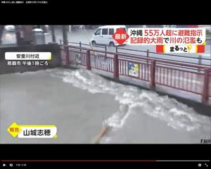
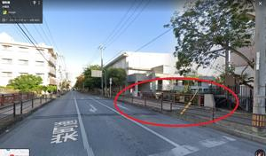
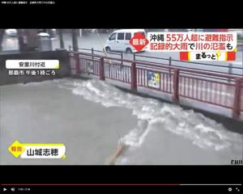
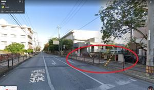
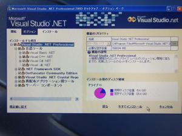
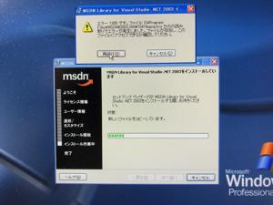

うるがいの話 ある日
最新: 大道小学校近くの川【うるがいの話 ある日】とは 一日だけのプログです
『うるがいの話』の最新一日だけのプログで、通信料が少なく経済的だ。カニの画像をクリックすると全ての日付が載る『うるがいの話』サイトを表示します
|
|
【うるがいの話】 うるがい(ｳﾙｶﾞｲ urugai)とは、『もずくがに』の名前でとても大きくなります。 |
|---|---|
|
|
【カミマヤーの話】 猫のことを方言でマヤーといいます。カミマヤー（kamimayaa）とは、神の猫のことです。 |
|
【たながぁの音楽】 たながぁ（ﾀﾅｶﾞｰ tanagaa）とは手長えびのことで、何種類かあり大きいのは車 エビぐらいになります。 |

|
【ぶながぁの話】 ぶながぁ(ﾌﾞﾅｶﾞｰ bunagaa)とは、赤い髪の毛、赤い身体、そして身長は１ｍ２０ｃｍ ぐらい、川の蟹を食べているの目撃された。場所は沖縄県国頭郡大宜味村のと ある村僕の隣近所に住んでいる爺さんから、聞いた話です。 |
|
|
【ギーマの話】 ギーマ(giima)とは、山原の里山に咲くスズランに似た、 花を付けます。実は食べられます、 気が付くと口の周りが紫になっています。 |
2022年06月01日 (水）大道小学校近くの川
16:27
 



 
昨日の大雨から、晴れ間も出た今日、近所は既に布団など干せるだけのもの干
している。たまたま、ネットを見ていると何処かで見たような景色・、大雨の
日も歩いて通勤した途中の大道小学校の近くの橋が、凄いことに。ここまでは
見たことないような光景である。映像は正午ごろだがその後、河の水は橋を超
えなかったのだろうか、小学生は早めに下校させられたのだろうか。師匠もあ
の雨の中を、濡れながら帰ったとのこと。そんな、大雨のなか私はあらたにオ
ークションで手に入れたＷｉｎｄｏｗｓＯＳ（８、Ｖｉｓｔａ）を仮想環境に
インストールしていた。二十年前から手元にあるソフトのＤＶＤも余生のため
にインストールしていたら、読み込みエラーになる、一昼夜いろいろ調べたが
諦めた（こういう、無駄なことに意味がある、ん！）。ただし、その後、別の
ＤＶＤで対応できたが。
１６時１８分 ビットコインの総資産 ￥１１、８１３↑